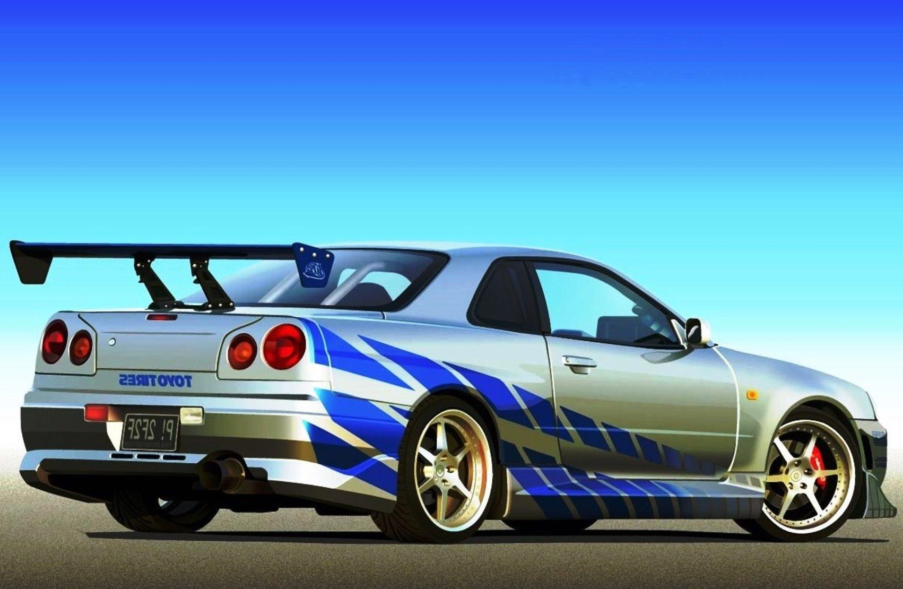

Nissan Skyline GTR Retorna com Potência e Estilo Aprimorados
O lendário Nissan GT-R Skyline continua a impressionar os entusiastas de velocidade!
O Nissan Skyline GT-R é um carro esportivo que faz parte da série Skyline, produzida pela Nissan desde os anos
60. O modelo mais famoso é o R34, que foi lançado em 1998 e tem um motor de 6 cilindros em linha com biturbo,
capaz de gerar 280 cavalos de potência e 392 Nm de torque1.
O R34 é considerado um dos carros mais desejados pelos fãs de velocidade e de filmes como Velozes e Furiosos,
onde apareceu em várias cenas. No Brasil, o R34 é um carro raro e caro, pois não foi oficialmente importado pela
Nissan. O preço estimado é de cerca de R$ 500 mil.
Atualmente, o Nissan GT-R é um modelo à parte do Skyline e tem uma versão atualizada, que foi lançada em 2007.
O GT-R atual tem um motor V6 biturbo de 3.8 litros, que entrega 570 cavalos de potência e 637 Nm de
torque. Ele pode acelerar de 0 a 100 km/h em apenas 2,8 segundos e atingir uma velocidade máxima de 315 km/h3.
No cenário automotivo internacional, um nome se destaca há décadas como sinônimo de desempenho, inovação e
emoção: o Nissan GT-R Skyline. Este ícone lendário das pistas e das ruas continua a impressionar e atrair os
entusiastas de velocidade em todo o mundo.
Desempenho Impecável:
Com uma história que remonta à década de 1960, o GT-R Skyline conquistou um lugar permanente no coração dos fãs
de carros esportivos. Sua mais recente encarnação, o GT-R R35, mantém a tradição com um motor V6 biturbo de alta
potência, entregando uma aceleração de tirar o fôlego e um desempenho em curvas que desafia a gravidade. Sua
tração nas quatro rodas e sistema de suspensão avançado garantem uma dirigibilidade excepcional, seja nas ruas
ou nas pistas.
Design Atemporal:
O design do GT-R Skyline é um casamento perfeito entre forma e função. Suas linhas aerodinâmicas, a distintiva
grade dianteira em forma de V e a icônica traseira em forma de bumerangue são instantaneamente reconhecíveis. Os
designers da Nissan conseguiram criar um carro que não apenas chama a atenção, mas também é altamente eficiente
em termos de fluxo de ar e refrigeração.
Tecnologia Avançada:
O GT-R Skyline não é apenas sobre potência bruta; ele também incorpora tecnologia de ponta. Sistemas como o
Nissan Advanced Driver Assist (NADAS) oferecem recursos de segurança ativos, como frenagem de emergência,
assistência de faixa e controle de cruzeiro adaptativo, tornando cada viagem não apenas emocionante, mas também
segura.
Cultura e Legado:
Além de suas capacidades mecânicas impressionantes, o GT-R Skyline é uma parte fundamental da cultura
automotiva. De aparições em videogames a filmes de ação, o GT-R se tornou um símbolo da busca pela excelência em
desempenho. Sua presença nas pistas de corrida também é notável, com inúmeras vitórias e recordes estabelecidos
ao longo dos anos.
O Futuro Brilhante:
Enquanto o GT-R R35 mantém viva a tradição, rumores sugerem que a Nissan está preparando uma nova geração para
continuar o legado do Skyline. Com avanços tecnológicos contínuos e um foco renovado na eficiência e
sustentabilidade, os fãs aguardam ansiosamente para ver o que o futuro reserva para este ícone automotivo.
Em resumo, o Nissan GT-R Skyline permanece como uma joia cintilante no mundo dos carros esportivos,
continuando a cativar gerações de entusiastas com seu desempenho impecável, design atemporal e herança rica.
Seja nas ruas ou nas pistas, o GT-R Skyline continua a ser uma força a ser reconhecida e admirada.
O GT-R é vendido no Brasil pela Nissan por R$ 1,2 milhão e compete com outros superesportivos como Porsche 911,
Ferrari F8 Tributo e Lamborghini Huracán
